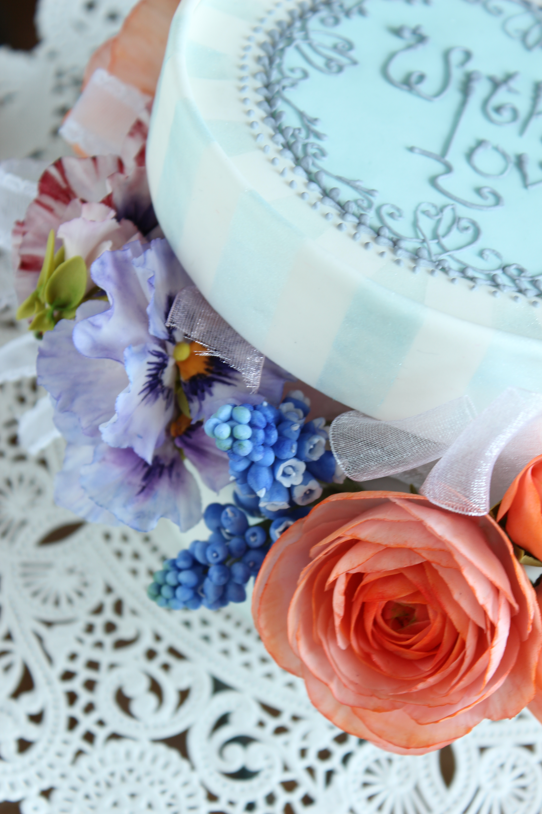
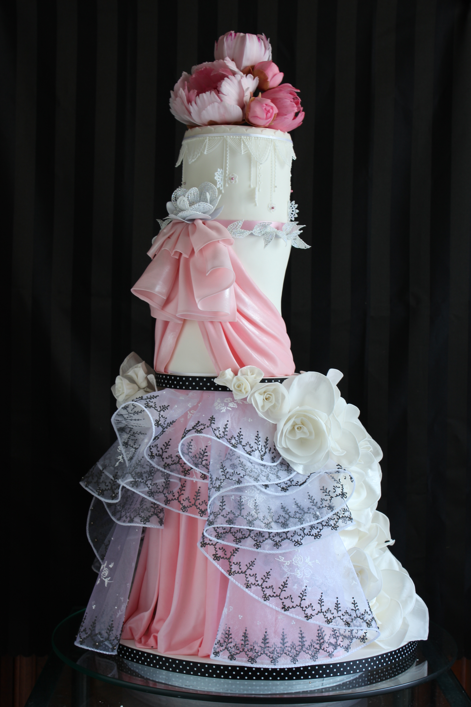

Work Samples
ケーキ作品ギャラリー





習得した花をケーキの上へ——装飾の総合表現
シュガーフラワーで作った美しい花々を、ケーキ土台と組み合わせて作品として完成させるレッスンです。花の配置・バランス・ケーキとの調和を学びながら、特別な一台を仕上げます。
「シュガーケーキレッスン」は、シュガーフラワーで作った花をケーキの上に飾りつける装飾技術を学ぶレッスンです。花単体を作る技術に加え、ケーキという「台座」との調和が求められます。
使用するケーキ土台はダミーケーキ（模型）を使用します。本物のスポンジケーキではありませんが、実際の装飾と同じ工程で制作します。
どのような花をどのくらい使うか、どの高さに配置するか——ケーキ装飾はデザインの視点から始まります。全体のシルエット、色の調和、花の向きなどを考えながら計画します。
花をケーキに固定する方法には専用の固定材を使います。花が傾いたり動いたりしないよう、安定した固定と自然な向きの調整が重要です。
最終的な仕上げでは、全体のバランスを確認しながら花の角度や葉の位置を細かく調整します。完成したケーキ作品は、ギフトやディスプレイとしても活用できます。


いいえ、ダミーケーキ（模型）を使用します。実際の装飾と同じ工程で制作できます。
デザインによりますが、メインの花3〜5輪＋葉・小花が目安です。花はご持参いただくか、別途ご相談ください。
ビギナー講座修了が推奨ですが、他教室での経験がある方はご相談ください。
直射日光・高温多湿を避ければ、数年間飾ることができます。
このレッスンは通常のシュガーケーキの装飾技術が対象です。ウェディングケーキはより特別なデザインと制作工程が求められる別のレッスンです。
シュガーケーキ装飾を習得した後は、特別な日のために作るウェディングシュガーケーキへ進む道が開かれます。
ウェディングシュガーケーキを見る